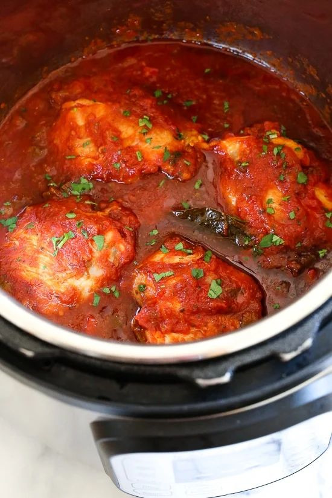

Instant Pot Chicken Cacciatore

- Meal
- Dinner
- Serves
- 6
- Protein
- chicken
- Cook
- instant pot · 15 min active / 45 min total · easy
- Make-ahead / leftovers
- yes / yes
- Mediterranean
- yes
- WW tier
- light
- Status
- Trying out (probation)
Classic Italian comfort food — chicken braised in tomato sauce with peppers and onions — done in under 45 minutes in the Instant Pot instead of 2+ hours on the stove.
Ingredients
- 2 lb bone-in chicken thighs (or boneless — both work)
- 1 can (14 oz) diced tomatoes
- 1 cup chicken broth
- 1 onion, sliced
- 1 bell pepper, sliced
- 3 cloves garlic, minced
- 1 tablespoon olive oil
- 1 teaspoon Italian seasoning
- Salt and pepper
Method
- Sauté onion, garlic, and peppers in olive oil using the Instant Pot's sauté mode.
- Season chicken with salt, pepper, and Italian seasoning.
- Add chicken to the pot. Pour in tomatoes and broth.
- Pressure cook on High for 10 minutes. Natural release 10 minutes.
- Serve over pasta, rice, or polenta.
Notes
- Assemble the ingredients in 15 minutes the night before, refrigerate, pressure cook the next evening.
- Counts as both the tomato quota and a Mediterranean dinner.